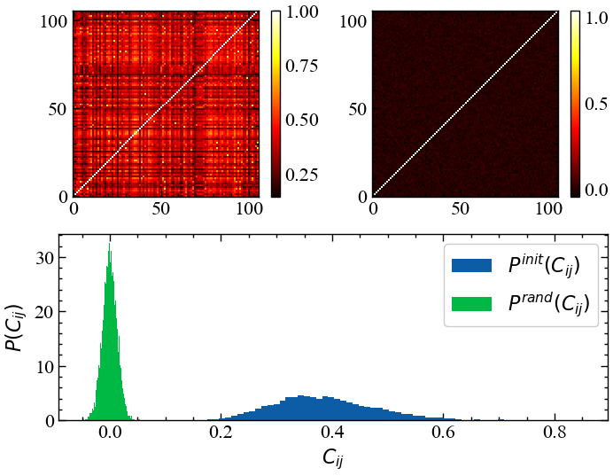
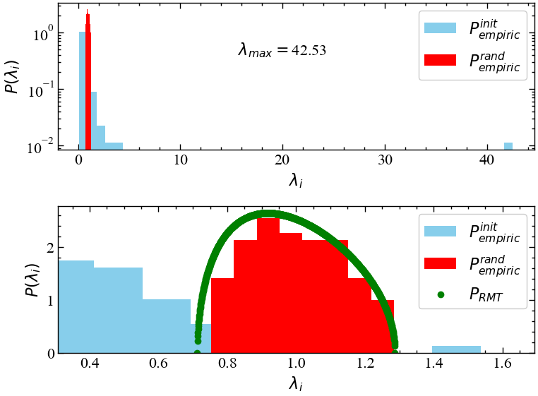
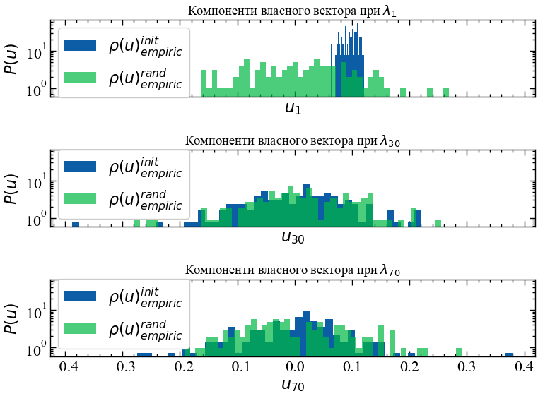
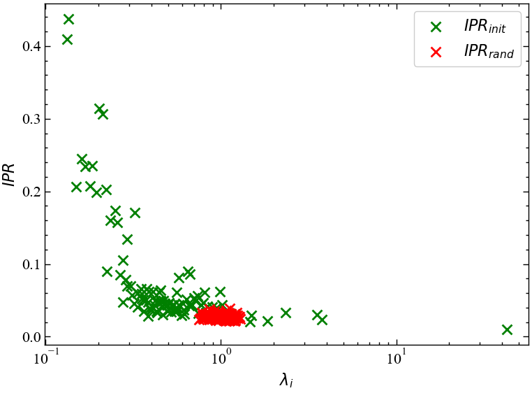
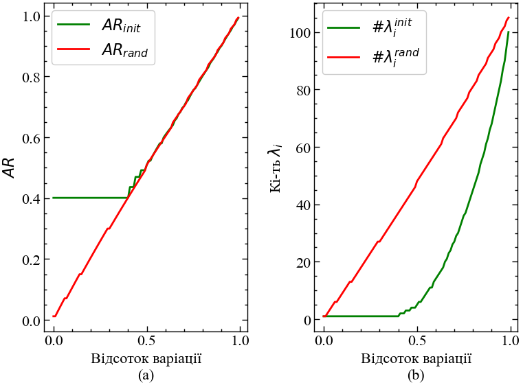
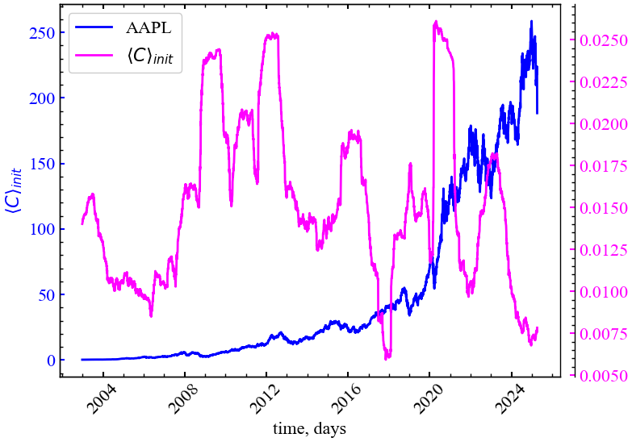
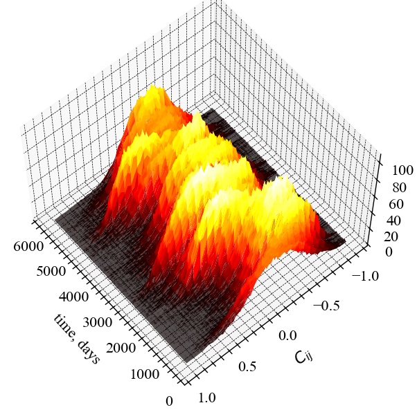
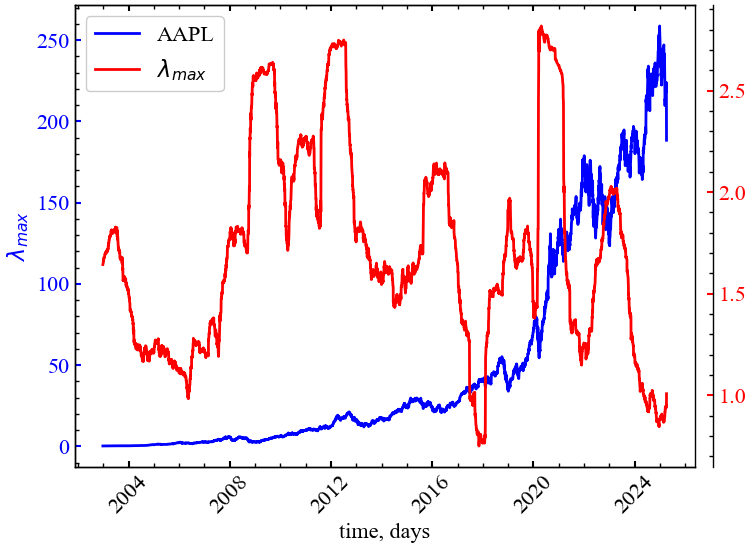
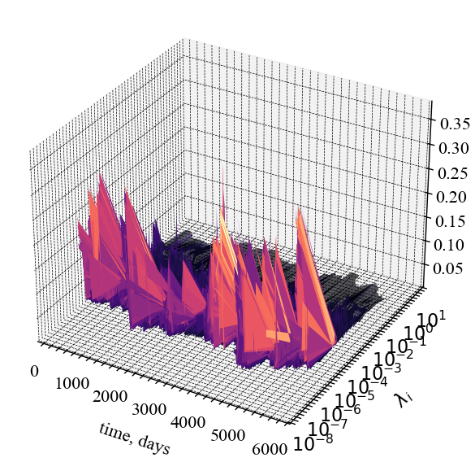
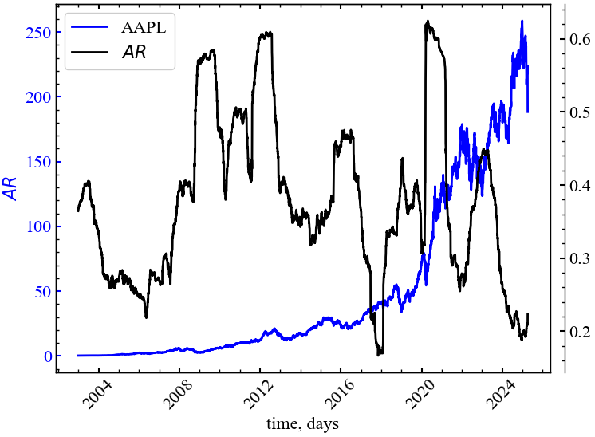

import numpy as np
import matplotlib.pyplot as plt
import matplotlib.gridspec as gridspec
import matplotlib.ticker as mticker
import pandas as pd
import yfinance as yf
import scienceplots
import requests
from tqdm import tqdm
np.seterr(divide='ignore', invalid='ignore')8 Лабораторна робота № 8
Тема. Дослідження процесів самоорганізації в складних системах із використання теорії випадкових матриць
Мета. Навчитись використовувати методи теорії випадкових матриць для дослідження колективних процесів у складних системах
8.1 Теоретичні відомості
Вивчення статистичних властивостей матриць з незалежними випадковими елементами — випадкових матриць — має багату історію, що починається з ядерної фізики [1–7], де проблема з’явилася більше 50 років тому при дослідженні енергетичних рівнів складних ядер. Теорія випадкової матриці (ТВМ) була розвинена в цьому контексті Вігнером (Wigner), Дайсоном (Dyson), Метою (Mehta) та іншими для пояснення статистики рівнів енергії складних квантових систем. Дослідники постулювали, що функція Гамільтона, яка описує важкі ядра, може бути задана матрицею \(H\) з незалежними випадковими елементами \(H_{ij}\), отриманими з розподілу імовірності. Відштовхуючись від цього припущення було зроблено низку вражаючих передбачень, які було підтверджено експериментально. Для складних квантових систем результати на основі ТВМ представляють середнє за всіма можливими взаємодіями. Відхилення від універсальних передбачень ТВМ відображують системну специфіку, невипадкові властивості системи, забезпечуючи ключові підходи до розуміння базової взаємодії системи. Недавні дослідження, що використовували методи аналізу ТВМ до аналізу властивостей матриці взаємних кореляцій \(C\) для економічних систем, показують, що близько 98% власних значень матриці \(C\) співпадають зі значеннями, отримуваними з використанням ТВМ, таким чином пропонуючи задовільний рівень хаотичності у вимірюваних крос-кореляціях. Також було знайдено, що існують відхилення від передбачень за допомогою ТВМ у близько 2% найбільших власних значень. Ці результати викликають наступні питання:
- Яка можлива інтерпретація для відхилень від ТВМ?
- Що можна сказати про структуру C з цих результатів?
- Яке практичне значення отриманих результатів?
Шляхом комп’ютерного моделювання виявлено, що найбільше власне значення матриці \(C\) представляє вплив ринку в цілому. Аналіз змісту власних значень, що відхиляються від ТВМ, показує існування взаємних кореляцій між акціями того ж самого типу діяльності, найбільш капіталізованими акціями, і акціями фірм, що мають бізнес у певному географічному секторі (локалізовані територіально). Обчислюючи скалярний добуток власних векторів від одного періоду часу до наступного, можна побачити, що власні вектори, що відхиляються, мають різні ступені стабільності в часі, визначеному кількісно величиною скалярного добутку. Найбільші два-три власних вектори стійкі протягом тривалих періодів часу, у той час як для іншої частини власних векторів, що відхиляються, стабільність у часі зменшується як тільки відповідні власні значення наближаються до верхньої межі ТВМ.
8.1.1 Знаходження коефіцієнтів матриці крос-кореляцій
Визначення кореляцій між різними акціями — тема, цікава тема не лише з точки зору розуміння економіки як складної динамічної системи, але також і прагматично, зокрема, з точки зору розміщення активів і оцінки портфельного ризику. Ми будемо аналізувати взаємні кореляції між акціями, застосовуючи поняття і методи теорії випадкових матриць, що використовуються в контексті складних квантових систем, де точний характер взаємодій між підодиницями невідомий.
Для визначення кількісно кореляцій спочатку обчислюється зміна цін (прибутковості) акції \(i=1,...,N\) за час \(\Delta t\),
\[ G_{i}(t) = \ln S_i(t+\Delta t) - \ln S_i(t), \tag{8.1}\]
де \(S_i(t)\) позначає ціну акції \(i\). Оскільки різні ціни мають різні рівні змінюванності (стандартні відхилення), визначатимемо стандартизовану прибутковість
\[ g_i(t) \equiv \left[ G_i(t) - \left\langle G_i \right\rangle \right] \big/ \sigma_i, \tag{8.2}\]
де \(\sigma_i \equiv \sqrt{\left\langle G_{i}^{2} \right\rangle - \left\langle G_i \right\rangle^{2}}\) — стандартне відхилення \(G_i\), а \(\left\langle...\right\rangle\) позначає середнє значення за досліджуваний період часу. Тоді знаходження матриці кореляцій \(C\) зводиться до обчислення формули:
\[ C_{ij} \equiv \left\langle g_i(t)g_j(t) \right\rangle. \tag{8.3}\]
За побудовою, елементи \(C_{ij}\) обмежені областю \(−1 \leq C_{ij} \leq 1\), де \(C_{ij} = 1\) відповідає повним кореляціям, \(C_{ij} = -1\) — повним антикореляціям, і \(C_{ij} = 0\) свідчить про некорельованність пар акцій.
Труднощі в аналізі важливості та значення коефіцієнтів крос-кореляції \(C_{ij}\) виникають внаслідок кількох причин, що полягають в наступному:
- ринкові умови з часом змінюються і взаємна кореляція, що існує між будь-якою парою акцій, може бути не постійною (нестаціонарною);
- скінчена довжина досліджуваного ряду, доступного для оцінювання взаємних кореляцій, додає так званий “шум вимірювання” — чим коротший досліджуваний ряд — тим менш точними будуть отримувані значення.
Яким же чином можна виділяти з \(C_{ij}\) ті акції, що залишилися корельованими на розглядуваному періоді часу? Щоб відповісти на це питання, перевіримо статистику \(C\) у порівнянні із так званою “нульовою гіпотезою” випадкової кореляційної матриці — матриці кореляцій, побудованої із взаємно некорельованих часових рядів. Якщо властивості \(C\) відповідають властивостям для випадкової матриці кореляцій, тоді можна говорити про те, що значення емпірично вимірюваних властивостей \(C\) випадкові. Навпаки, відхилення властивостей \(C\) від таких же властивостей для випадкової кореляційної матриці передає інформацію про “справжні” кореляції. Отже, нашою метою є порівняння властивостей \(C\) з такими ж властивостями випадкової матриці кореляцій і розділ властивостей \(C\) на дві групи: (a) частина \(C\), що відповідає властивостям випадкової кореляційної матриці (“шум”) і (b) частина \(C\), що відхиляється (“інформація”).
8.1.2 Розподіл власних значень
Для отримання інформації про взаємні кореляції \(C\) необхідно порівняти властивості \(C\) з такими ж властивостями випадкової матриці крос-кореляцій [8]. У матричній нотації така матриця може бути виражена як
\[ C = \frac{1}{L} GG^{T}, \tag{8.4}\]
де \(G\) — матриця розміру \(N \times L\) з елементами \(g_{im}=g_i(m\Delta t), i=1,...,N; m=0,...,L-1\) і \(G^{T}\) позначає транспонування \(G\). Розглянемо випадкову кореляційну матрицю
\[ R = \frac{1}{L} AA^{T}, \tag{8.5}\]
де \(A\) — матриця розміру \(N \times L\), що містить \(N\) часових рядів із \(L\) випадковими елементів \(a_{im}\) з нульовим середнім і одиничним відхиленням, що означають взаємну некорельованість. За побудовою \(R\) належить до типу матриць, які часто називають матрицями Вішарта у багатовимірній статистиці [9].
Статистичні властивості випадкових матриць \(R\) відомі [10,11]. Зокрема, у наближенні \(N \to \infty\), \(L \to \infty\), такому, що \(Q \equiv L/N(>1)\) фіксоване, показано аналітично [11], що функція розподілу щільності імовірності \(P_{rm}(\lambda)\) власних значень \(\lambda\) випадкової матриці кореляції \(R\) визначається як
\[ P_{rm}(\lambda) = \frac{Q}{2\pi}\frac{\sqrt{(\lambda_{+} - \lambda)(\lambda - \lambda_{-})}}{\lambda}, \tag{8.6}\]
із \(\lambda\) в межах границь \(\lambda_{-} \leq \lambda_{i} \leq \lambda_{+}\), де \(\lambda_{-}\) і \(\lambda_{+}\) — найменше та найбільше власні значення \(R\), які можна визначити аналітично як
\[ \lambda_{\pm} = 1 + 1/Q \pm 2\sqrt{1/Q}. \tag{8.7}\]
Вираз (8.6) є точним для випадку розподілених за Гаусом матричних елементів \(a_{im}\).
Порівняємо розподіл власних значень \(P(\lambda)\) для \(C\) з \(P_{rm}(\lambda)\). Для цього обчислимо власні значення \(\lambda_i\) матриці \(C\), причому \(\lambda_i\) впорядкуємо за зростанням (\(\lambda_{i+1} > \lambda_{i}\)). При дослідженнях зверніть увагу на присутність чіткої “великої частини” власних значень, що спадають у межах границь \([\lambda_{-}, \lambda_{+}]\) для \(P_{rm}(\lambda)\). Також зверніть увагу на відхилення для деяких найбільших і найменших власних значень отриманих за допомогою ТВМ.
Оскільки (8.6) є таким, що строго відповідає лише для \(L \to \infty\) і \(N \to \infty\), необхідно перевірити також відхилення від ідеального випадку, оскільки робота проводиться завжди зі скінченими рядами. При дослідженнях виявляється, що для кількох найбільших (найменших) власних значень ефект впливу скінчених величин \(L\) і \(N\) відсутній.
8.1.3 Розподіл власних векторів
Відхилення \(P(\lambda)\) від передбачення ТВМ \(P_{rm}(\lambda)\) свідчить про те, що ці відхилення також повинні відображатися в статистиці відповідних компонент власного вектора [8]. Відповідно, у даній лабораторній ми будемо аналізувати розподіл компоненти власного вектора. Розподіл компонент \(\left\{ u_{l}^{k}; l=1,...,N \right\}\) власного вектора \(u^k\) випадкової кореляційної матриці \(R\) має відповідати розподілу Гауса з нульовим середнім та одиничною дисперсією:
\[ \rho_{rm}(u) = \frac{1}{\sqrt{2\pi}}\exp\left( -u^{2} \big/ 2 \right). \]
8.1.4 Обернене відношення участі
Вивчивши інтерпретацію найбільшого власного значення, що значно відхиляється від результатів ТВМ, зосередимось на власних значеннях, що залишаються. Відхилення розподілу компонентів власного вектора \(u_k\) від ТВМ Гаусового передбачення більш явне, коли відстань від верхньої границі ТВМ \(\lambda_k - \lambda_{+}\) збільшується. Оскільки близькість до \(\lambda_{+}\) збільшує ефекти хаотичності, визначаємо кількість компонентів, що беруть значну участь у кожному власному векторі, що, у свою чергу, відображає ступінь відхилення від ТВМ для розподілу компонентів власного вектора. Для цього використовується поняття оберненого відношення участі (ОВУ) [12–14], що часто застосовується в теорії локалізації. ОВУ власного вектора \(u_k\) визначається як
\[ I^{k} \equiv \sum_{l=1}^{N}\left[ u_{l}^{k} \right]^4, \tag{8.8}\]
де \(u_{l}^{k}\), \(l=1,...,N\) — компоненти власного вектора \(u^{k}\). Значення \(I^{k}\) може бути проілюстровано двома граничними випадками:
- вектор з ідентичними компонентами \(u_{l}^{k} \equiv 1 \big/ \sqrt{N}\) має \(I^{k} = 1 \big/ N\);
- вектор з одним компонентом \(u_{1}^{k}=1\) і нульовими іншими має \(I^{k}=1\).
Таким чином, ОВУ визначає кількість даних з числа компонентів власного вектора, що значно впливають на ринок, заданий системою часових рядів. Наявність векторів з великими значеннями \(I^{k}\) також виникає в теорії локалізації Андерсона. У контексті теорії локалізації часто знаходять “випадкову смугу матриць”, що містять узагальнені стани з маленьким \(I^{k}\) в більшій частині спектра власних значень, тоді як основні стани локалізовані і мають великі \(I^{k}\). Виявлення локалізованих станів для маленьких і великих власних значень матриці крос-кореляцій \(C\) нагадує про локалізацію Андерсона і припускає, що \(C\) може мати випадкову зону матричної структури.
8.2 Хід роботи
Імпортуємо необхідні бібліотеки:
Визначаємо стиль рисунків:
plt.style.use(['science', 'notebook', 'grid']) # стиль, що використовуватиметься
# для виведення рисунків
size = 16
params = {
'figure.figsize': (8, 6), # встановлюємо ширину та висоту рисунків за замовчуванням
'font.size': size, # розмір фонтів рисунку
'lines.linewidth': 2, # товщина ліній
'axes.titlesize': 'small', # розмір титулки над рисунком
'axes.labelsize': size, # розмір підписів по осям
'legend.fontsize': size, # розмір легенди
'xtick.labelsize': size, # розмір розмітки по осі Ох
'ytick.labelsize': size, # розмір розмітки по осі Ох
"font.family": "Serif", # сімейство стилів підписів
"font.serif": ["Times New Roman"], # стиль підпису
'savefig.dpi': 300, # якість збережених зображень
'axes.grid': False # побудова сітки на самому рисунку
}
plt.rcParams.update(params) # оновлення стилю згідно налаштуваньВиконуємо парсинг та фільтрацію заголовків акцій компаній:
headers = {
'authority': 'api.nasdaq.com',
'accept': 'application/json, text/plain, */*',
'user-agent': 'Mozilla/5.0 (Windows NT 10.0; Win64; x64) AppleWebKit/537.36 (KHTML, like Gecko) Chrome/87.0.4280.141 Safari/537.36',
'origin': 'https://www.nasdaq.com',
'sec-fetch-site': 'same-site',
'sec-fetch-mode': 'cors',
'sec-fetch-dest': 'empty',
'referer': 'https://www.nasdaq.com/',
'accept-language': 'en-US,en;q=0.9',
}
params = (
('tableonly', 'true'),
('limit', '25'),
('offset', '0'),
('download', 'true'),
)
r = requests.get('https://api.nasdaq.com/api/screener/stocks', headers=headers, params=params)
data = r.json()['data']
df = pd.DataFrame(data['rows'], columns=data['headers'])
df = df.dropna(subset={'marketCap'})
df = df[~df['symbol'].str.contains(r"\/|\.|\^")]
df.head()| symbol | name | lastsale | netchange | pctchange | marketCap | country | ipoyear | volume | sector | industry | url | |
|---|---|---|---|---|---|---|---|---|---|---|---|---|
| 0 | A | Agilent Technologies Inc. Common Stock | $106.46 | -1.14 | -1.059% | 30352035252.00 | United States | 1999 | 1523233 | Industrials | Biotechnology: Laboratory Analytical Instruments | /market-activity/stocks/a |
| 1 | AA | Alcoa Corporation Common Stock | $24.54 | 0.01 | 0.041% | 6353021630.00 | United States | 2016 | 5126365 | Industrials | Aluminum | /market-activity/stocks/aa |
| 2 | AACB | Artius II Acquisition Inc. Class A Ordinary Sh... | $9.98 | 0.01 | 0.10% | 0.00 | United States | 2025 | 186104 | /market-activity/stocks/aacb | ||
| 3 | AACBR | Artius II Acquisition Inc. Rights | $0.22 | 0.00 | 0.00% | 0.00 | United States | 2025 | 296 | /market-activity/stocks/aacbr | ||
| 4 | AACBU | Artius II Acquisition Inc. Units | $10.13 | 0.00 | 0.00% | 0.00 | United States | 2025 | 160 | Finance | Blank Checks | /market-activity/stocks/aacbu |
Фільтруємо та сортуємо заголовків акцій за їх капіталізацією:
def cust_filter(mkt_cap):
if 'M' in mkt_cap:
return float(mkt_cap[1:-1])
elif 'B' in mkt_cap:
return float(mkt_cap[1:-1]) * 1000
elif mkt_cap == '':
return 0.0
else:
return float(mkt_cap[1:]) / 1e6
df['marketCap'] = df['marketCap'].apply(cust_filter)
df = df.sort_values('marketCap', ascending=False)
df.head()| symbol | name | lastsale | netchange | pctchange | marketCap | country | ipoyear | volume | sector | industry | url | |
|---|---|---|---|---|---|---|---|---|---|---|---|---|
| 2693 | GOOG | Alphabet Inc. Class C Capital Stock | $162.79 | 1.90 | 1.181% | 975456.650000 | United States | 2004 | 21904291 | Technology | Computer Software: Programming Data Processing | /market-activity/stocks/goog |
| 2694 | GOOGL | Alphabet Inc. Class A Common Stock | $161.30 | 2.50 | 1.574% | 957375.500000 | United States | 2004 | 30203248 | Technology | Computer Software: Programming Data Processing | /market-activity/stocks/googl |
| 4407 | NVDA | NVIDIA Corporation Common Stock | $111.61 | 2.69 | 2.47% | 723284.000000 | United States | 1999 | 236121507 | Technology | Semiconductors | /market-activity/stocks/nvda |
| 3855 | META | Meta Platforms Inc. Class A Common Stock | $572.21 | 23.21 | 4.228% | 449785.168026 | United States | 2012 | 31159033 | Technology | Computer Software: Programming Data Processing | /market-activity/stocks/meta |
| 15 | AAPL | Apple Inc. Common Stock | $213.32 | 0.82 | 0.386% | 204508.612360 | United States | 1980 | 57365675 | Technology | Computer Manufacturing | /market-activity/stocks/aapl |
Визначаємо найпередовіші акцій за їх капіталізацією:
top = 150
tickers_list = df.iloc[:top]['symbol'].tolist()
tickers_list[:10]['GOOG', 'GOOGL', 'NVDA', 'META', 'AAPL', 'MSFT', 'T', 'MA', 'NOW', 'SHEL']Зчитуємо дані з Yahoo Finance згідно створенного списку акцій. Вилучимо ціни закриття всіх акцій за період з 31 грудня 2001 року по 1 жовтня 2023 року:
start = "2001-12-31"
end = "2025-04-05"
data_init = yf.download(tickers_list, start, end)["Close"]
xlabel = 'time, days' # підпис по вісі Ох Далі нам потребується обрати фінансовий індекс для порівняння з розрахованими індикаторами. Далі надається список усіх доступних для нас акцій:
ylabel = 'AAPL' # підпис по вісі Оу
data_init.columns.valuesarray(['AAPL', 'ABBV', 'ABT', 'ADBE', 'ADP', 'AER', 'AMAT', 'AMD', 'AMGN',
'AMZN', 'ANET', 'ARM', 'ASML', 'AVB', 'AVGO', 'AXP', 'AZN', 'BA',
'BABA', 'BCE', 'BHP', 'BKNG', 'BLK', 'BSX', 'BTI', 'BUD', 'C',
'CAT', 'CB', 'CCJ', 'CCZ', 'CM', 'CMCSA', 'CME', 'CNC', 'CNI',
'COP', 'COST', 'CRM', 'CSCO', 'CVX', 'DE', 'DG', 'DGX', 'DHR',
'DIS', 'EMR', 'ETN', 'GE', 'GFL', 'GFS', 'GILD', 'GOOG', 'GOOGL',
'GRAB', 'GS', 'GSK', 'HD', 'HDB', 'HON', 'HSBC', 'HWM', 'IBM',
'IBN', 'IFF', 'INTU', 'ISRG', 'JNJ', 'JPM', 'KLAC', 'KOF', 'LII',
'LIN', 'LLY', 'LMT', 'LOW', 'MA', 'MCD', 'MELI', 'META', 'MMC',
'MO', 'MRK', 'MS', 'MSFT', 'MUFG', 'NEE', 'NFLX', 'NOW', 'NSC',
'NU', 'NVDA', 'NVO', 'NVS', 'OKTA', 'PANW', 'PDD', 'PEP', 'PFE',
'PG', 'PGR', 'PLTR', 'PM', 'QCOM', 'QSR', 'RACE', 'RCL', 'ROP',
'RTX', 'RY', 'SAP', 'SCHW', 'SHEL', 'SHOP', 'SMCI', 'SMFG', 'SNY',
'SONY', 'SPGI', 'SPOT', 'STLD', 'SYF', 'SYK', 'T', 'TBB', 'TD',
'TJX', 'TM', 'TMO', 'TMUS', 'TROW', 'TSM', 'TTE', 'TXN', 'UBER',
'UBS', 'UL', 'UNH', 'UNP', 'V', 'VALE', 'VRTX', 'VZ', 'WFC', 'WIT',
'WMT', 'XOM', 'XYL', 'YMM', 'ZTS'], dtype=object)perc = 5.0
min_count = int(((100-perc)/100)*data_init.shape[0] + 1)
data_init = data_init.dropna(axis=1, thresh=min_count)
data_init| Ticker | AAPL | ABT | ADBE | ADP | AMAT | AMD | AMGN | AMZN | ASML | AVB | ... | UL | UNH | UNP | VALE | VRTX | VZ | WFC | WIT | WMT | XOM |
|---|---|---|---|---|---|---|---|---|---|---|---|---|---|---|---|---|---|---|---|---|---|
| Date | |||||||||||||||||||||
| 2001-12-31 | 0.329525 | 13.541917 | 15.452657 | 27.868155 | 14.635614 | 15.860000 | 39.373032 | 0.541000 | 11.879900 | 19.334274 | ... | 8.259520 | 14.012588 | 9.025547 | NaN | 24.590000 | 13.508932 | 11.376822 | 0.710800 | 12.452838 | 18.579376 |
| 2002-01-02 | 0.350590 | 13.563783 | 15.845819 | 27.740412 | 15.208619 | 16.389999 | 39.345139 | 0.548000 | 12.395513 | 19.244366 | ... | 8.284346 | 13.943280 | 8.962210 | NaN | 24.540001 | 13.802114 | 11.368975 | 0.714102 | 12.561036 | 18.721210 |
| 2002-01-03 | 0.354803 | 13.575924 | 16.462929 | 27.726206 | 16.602846 | 19.370001 | 37.908058 | 0.595000 | 13.405828 | 19.448696 | ... | 8.212348 | 13.786854 | 9.291566 | NaN | 24.170000 | 14.260388 | 11.410846 | 0.737990 | 12.545882 | 18.749578 |
| 2002-01-04 | 0.356459 | 13.551637 | 17.866358 | 27.678902 | 16.504293 | 20.000000 | 38.801003 | 0.612500 | 13.524277 | 19.399651 | ... | 8.118011 | 13.860119 | 9.500578 | NaN | 23.950001 | 14.405552 | 11.439634 | 0.781880 | 12.463658 | 18.910313 |
| 2002-01-07 | 0.344572 | 13.456907 | 17.995750 | 27.087473 | 16.329109 | 19.980000 | 38.849827 | 0.617000 | 13.370988 | 19.350622 | ... | 8.031124 | 13.771022 | 9.489489 | NaN | 23.790001 | 14.317312 | 11.457955 | 0.813730 | 12.418221 | 18.744850 |
| ... | ... | ... | ... | ... | ... | ... | ... | ... | ... | ... | ... | ... | ... | ... | ... | ... | ... | ... | ... | ... | ... |
| 2025-03-31 | 222.130005 | 132.038361 | 383.529999 | 305.529999 | 145.119995 | 102.739998 | 311.549988 | 190.259995 | 660.584229 | 214.619995 | ... | 59.549999 | 523.750000 | 236.240005 | 9.98 | 484.820007 | 44.642956 | 71.790001 | 3.060000 | 87.790001 | 118.930000 |
| 2025-04-01 | 223.190002 | 131.082794 | 383.200012 | 306.540009 | 145.660004 | 102.779999 | 306.920013 | 192.169998 | 665.279663 | 214.509995 | ... | 59.570000 | 523.119995 | 237.169998 | 10.10 | 484.739990 | 44.662640 | 71.309998 | 3.060000 | 88.830002 | 119.040001 |
| 2025-04-02 | 223.889999 | 131.321686 | 385.779999 | 307.230011 | 147.750000 | 102.959999 | 305.700012 | 196.009995 | 666.944519 | 215.610001 | ... | 59.860001 | 523.200012 | 238.460007 | 10.09 | 483.489990 | 44.032757 | 72.260002 | 3.090000 | 89.760002 | 118.669998 |
| 2025-04-03 | 203.190002 | 131.023087 | 367.250000 | 305.390015 | 135.509995 | 93.800003 | 309.850006 | 178.410004 | 621.295837 | 205.860001 | ... | 62.549999 | 540.440002 | 223.970001 | 9.73 | 484.010010 | 44.898846 | 65.669998 | 2.920000 | 87.260002 | 112.430000 |
| 2025-04-04 | 188.380005 | 123.866226 | 349.070007 | 286.130005 | 126.949997 | 85.760002 | 294.390015 | 171.000000 | 603.680420 | 191.699997 | ... | 59.919998 | 525.049988 | 213.259995 | 9.08 | 474.619995 | 42.349785 | 60.980000 | 2.790000 | 83.190002 | 104.339996 |
5854 rows × 110 columns
data_init = data_init.dropna(axis=1)
data_init| Ticker | AAPL | ABT | ADBE | ADP | AMAT | AMD | AMGN | AMZN | ASML | AVB | ... | UBS | UL | UNH | UNP | VRTX | VZ | WFC | WIT | WMT | XOM |
|---|---|---|---|---|---|---|---|---|---|---|---|---|---|---|---|---|---|---|---|---|---|
| Date | |||||||||||||||||||||
| 2001-12-31 | 0.329525 | 13.541917 | 15.452657 | 27.868155 | 14.635614 | 15.860000 | 39.373032 | 0.541000 | 11.879900 | 19.334274 | ... | 17.884565 | 8.259520 | 14.012588 | 9.025547 | 24.590000 | 13.508932 | 11.376822 | 0.710800 | 12.452838 | 18.579376 |
| 2002-01-02 | 0.350590 | 13.563783 | 15.845819 | 27.740412 | 15.208619 | 16.389999 | 39.345139 | 0.548000 | 12.395513 | 19.244366 | ... | 17.855949 | 8.284346 | 13.943280 | 8.962210 | 24.540001 | 13.802114 | 11.368975 | 0.714102 | 12.561036 | 18.721210 |
| 2002-01-03 | 0.354803 | 13.575924 | 16.462929 | 27.726206 | 16.602846 | 19.370001 | 37.908058 | 0.595000 | 13.405828 | 19.448696 | ... | 17.931063 | 8.212348 | 13.786854 | 9.291566 | 24.170000 | 14.260388 | 11.410846 | 0.737990 | 12.545882 | 18.749578 |
| 2002-01-04 | 0.356459 | 13.551637 | 17.866358 | 27.678902 | 16.504293 | 20.000000 | 38.801003 | 0.612500 | 13.524277 | 19.399651 | ... | 18.034794 | 8.118011 | 13.860119 | 9.500578 | 23.950001 | 14.405552 | 11.439634 | 0.781880 | 12.463658 | 18.910313 |
| 2002-01-07 | 0.344572 | 13.456907 | 17.995750 | 27.087473 | 16.329109 | 19.980000 | 38.849827 | 0.617000 | 13.370988 | 19.350622 | ... | 17.956104 | 8.031124 | 13.771022 | 9.489489 | 23.790001 | 14.317312 | 11.457955 | 0.813730 | 12.418221 | 18.744850 |
| ... | ... | ... | ... | ... | ... | ... | ... | ... | ... | ... | ... | ... | ... | ... | ... | ... | ... | ... | ... | ... | ... |
| 2025-03-31 | 222.130005 | 132.038361 | 383.529999 | 305.529999 | 145.119995 | 102.739998 | 311.549988 | 190.259995 | 660.584229 | 214.619995 | ... | 30.629999 | 59.549999 | 523.750000 | 236.240005 | 484.820007 | 44.642956 | 71.790001 | 3.060000 | 87.790001 | 118.930000 |
| 2025-04-01 | 223.190002 | 131.082794 | 383.200012 | 306.540009 | 145.660004 | 102.779999 | 306.920013 | 192.169998 | 665.279663 | 214.509995 | ... | 30.350000 | 59.570000 | 523.119995 | 237.169998 | 484.739990 | 44.662640 | 71.309998 | 3.060000 | 88.830002 | 119.040001 |
| 2025-04-02 | 223.889999 | 131.321686 | 385.779999 | 307.230011 | 147.750000 | 102.959999 | 305.700012 | 196.009995 | 666.944519 | 215.610001 | ... | 30.450001 | 59.860001 | 523.200012 | 238.460007 | 483.489990 | 44.032757 | 72.260002 | 3.090000 | 89.760002 | 118.669998 |
| 2025-04-03 | 203.190002 | 131.023087 | 367.250000 | 305.390015 | 135.509995 | 93.800003 | 309.850006 | 178.410004 | 621.295837 | 205.860001 | ... | 28.219999 | 62.549999 | 540.440002 | 223.970001 | 484.010010 | 44.898846 | 65.669998 | 2.920000 | 87.260002 | 112.430000 |
| 2025-04-04 | 188.380005 | 123.866226 | 349.070007 | 286.130005 | 126.949997 | 85.760002 | 294.390015 | 171.000000 | 603.680420 | 191.699997 | ... | 26.760000 | 59.919998 | 525.049988 | 213.259995 | 474.619995 | 42.349785 | 60.980000 | 2.790000 | 83.190002 | 104.339996 |
5854 rows × 106 columns
data = data_init.T
data| Date | 2001-12-31 | 2002-01-02 | 2002-01-03 | 2002-01-04 | 2002-01-07 | 2002-01-08 | 2002-01-09 | 2002-01-10 | 2002-01-11 | 2002-01-14 | ... | 2025-03-24 | 2025-03-25 | 2025-03-26 | 2025-03-27 | 2025-03-28 | 2025-03-31 | 2025-04-01 | 2025-04-02 | 2025-04-03 | 2025-04-04 |
|---|---|---|---|---|---|---|---|---|---|---|---|---|---|---|---|---|---|---|---|---|---|
| Ticker | |||||||||||||||||||||
| AAPL | 0.329525 | 0.350590 | 0.354803 | 0.356459 | 0.344572 | 0.340208 | 0.325763 | 0.319443 | 0.316735 | 0.318240 | ... | 220.729996 | 223.750000 | 221.529999 | 223.850006 | 217.899994 | 222.130005 | 223.190002 | 223.889999 | 203.190002 | 188.380005 |
| ABT | 13.541917 | 13.563783 | 13.575924 | 13.551637 | 13.456907 | 13.369456 | 13.296585 | 13.418033 | 13.625298 | 13.627732 | ... | 126.623451 | 125.020874 | 126.026222 | 130.744370 | 130.216812 | 132.038361 | 131.082794 | 131.321686 | 131.023087 | 123.866226 |
| ADBE | 15.452657 | 15.845819 | 16.462929 | 17.866358 | 17.995750 | 18.234632 | 18.727327 | 18.140076 | 17.931055 | 17.717056 | ... | 394.470001 | 403.640015 | 397.809998 | 396.149994 | 385.709991 | 383.529999 | 383.200012 | 385.779999 | 367.250000 | 349.070007 |
| ADP | 27.868155 | 27.740412 | 27.726206 | 27.678902 | 27.087473 | 27.063816 | 26.813046 | 27.049604 | 26.926598 | 27.092201 | ... | 298.890015 | 299.380005 | 302.410004 | 305.429993 | 300.829987 | 305.529999 | 306.540009 | 307.230011 | 305.390015 | 286.130005 |
| AMAT | 14.635614 | 15.208619 | 16.602846 | 16.504293 | 16.329109 | 16.708683 | 17.037163 | 16.785328 | 16.427652 | 16.537142 | ... | 154.949997 | 153.639999 | 150.679993 | 147.679993 | 145.059998 | 145.119995 | 145.660004 | 147.750000 | 135.509995 | 126.949997 |
| ... | ... | ... | ... | ... | ... | ... | ... | ... | ... | ... | ... | ... | ... | ... | ... | ... | ... | ... | ... | ... | ... |
| VZ | 13.508932 | 13.802114 | 14.260388 | 14.405552 | 14.317312 | 14.284331 | 14.020444 | 14.160989 | 14.255639 | 14.430616 | ... | 42.871410 | 42.802517 | 43.481609 | 44.249279 | 44.219753 | 44.642956 | 44.662640 | 44.032757 | 44.898846 | 42.349785 |
| WFC | 11.376822 | 11.368975 | 11.410846 | 11.439634 | 11.457955 | 11.413460 | 11.355891 | 11.376822 | 11.332338 | 11.259050 | ... | 74.279999 | 74.239998 | 73.470001 | 72.279999 | 70.690002 | 71.790001 | 71.309998 | 72.260002 | 65.669998 | 60.980000 |
| WIT | 0.710800 | 0.714102 | 0.737990 | 0.781880 | 0.813730 | 0.810817 | 0.795280 | 0.721869 | 0.723423 | 0.737795 | ... | 3.130000 | 3.140000 | 3.100000 | 3.130000 | 3.030000 | 3.060000 | 3.060000 | 3.090000 | 2.920000 | 2.790000 |
| WMT | 12.452838 | 12.561036 | 12.545882 | 12.463658 | 12.418221 | 12.515593 | 12.203996 | 12.333829 | 12.074171 | 12.065516 | ... | 87.489998 | 84.760002 | 85.209999 | 85.629997 | 85.150002 | 87.790001 | 88.830002 | 89.760002 | 87.260002 | 83.190002 |
| XOM | 18.579376 | 18.721210 | 18.749578 | 18.910313 | 18.744850 | 18.768488 | 18.551008 | 18.621922 | 18.201168 | 18.267370 | ... | 115.800003 | 116.589996 | 118.269997 | 117.889999 | 117.730003 | 118.930000 | 119.040001 | 118.669998 | 112.430000 | 104.339996 |
106 rows × 5854 columns
8.2.1 Знаходження коефіцієнтів матриці крос-кореляцій
Перш за все нам потребується процедура для перетворення ряду до потрібного нам виду. Для цього визначимо функцію transformation(). З її допомогою для всього ряду та у віконній процедурі будемо рахувати прибутковості та всі необхідні індикатори.
def transformation(signal, ret_type):
for_rmt = signal.copy()
# Зважаючи на вид ряду, виконуємо
# необхідні перетворення
if ret_type == 1:
for_rmt.values
elif ret_type == 2:
for_rmt = for_rmt.diff(axis=1).values
elif ret_type == 3:
for_rmt = for_rmt.pct_change(axis=1).values
elif ret_type == 4:
for_rmt = for_rmt.pct_change(axis=1).dropna(axis=1).values
for_rmt -= np.nanmean(for_rmt, axis=1, keepdims=True)
for_rmt /= np.nanstd(for_rmt, axis=1, keepdims=True)
elif ret_type == 5:
for_rmt = for_rmt.pct_change(axis=1).values
for_rmt = for_rmt[~np.isnan(for_rmt).any(axis=1)]
for_rmt -= np.mean(for_rmt, axis=1, keepdims=True)
for_rmt /= np.std(for_rmt, axis=1, keepdims=True)
for_rmt = np.abs(for_rmt)
elif ret_type == 6:
for_rmt = for_rmt.values
for_rmt -= np.mean(for_rmt, axis=1, keepdims=True)
for_rmt /= np.std(for_rmt, axis=1, keepdims=True)
return for_rmtseries_type = 4
log_ret = transformation(data, series_type)N, T = log_ret.shapeБудуємо матрицю кореляцій для матриці прибутковостей наших активів:
def calc_cross_corr(data):
C = (1/T)*np.dot(data, data.T)
di = np.diag_indices(data.shape[0])
ccoef = np.ma.asarray(C)
ccoef[di] = np.ma.masked
ccoef_flat = ccoef.compressed()
return C, ccoef_flatC, ccoef_flat = calc_cross_corr(log_ret)І матрицю кореляцій для перемішаної матриці прибутковостей:
np.random.seed(1234)
random_stocks = np.random.normal(size=(N,T))
R, ccoef_flat_rand = calc_cross_corr(random_stocks)Виводимо результат:
fig = plt.figure(figsize=(8, 6))
gs = gridspec.GridSpec(2, 2)
ax1 = fig.add_subplot(gs[0, 0])
im1 = ax1.imshow(C, cmap='hot', interpolation='nearest')
ax1.invert_yaxis()
fig.colorbar(im1, ax=ax1)
ax2 = fig.add_subplot(gs[0, 1])
im2 = ax2.imshow(R, cmap='hot', interpolation='nearest')
ax2.invert_yaxis()
fig.colorbar(im2, ax=ax2)
ax3 = fig.add_subplot(gs[1, :])
ax3.hist(ccoef_flat, bins='auto', density=True, label=r'$P^{init}(C_{ij})$')
ax3.hist(ccoef_flat_rand, bins='auto', density=True, label=r'$P^{rand}(C_{ij})$')
ax3.set_xlabel(r'$C_{ij}$')
ax3.set_ylabel(r'$P(C_{ij})$')
ax3.legend()
fig.align_labels()
plt.show();
На Рис. 8.1 видно, що розподіл коефіцієнтів кореляції для вихідної матриці значно відхиляється розподілу для випадкової матриці. Можна помітити, що \(P^{init}(C_{ij})\) представляється доволі розтягненим в діапазоні \(C_{ij}\in [0.1, 0.8]\), що вказує на те, що достатньо багато досліджуваних активів досить сильно відрізняють один від одного. Можна виокремити активи, які характеризуються досить значним ступенем лінійної залежності по відношенню до більності активів на протязі значного часу існування, а є такі активи, які проявляють лінійну залежність лише в конкретних ринкових умовах. Тим не менш, увесь ринок характеризується досить значним ступенем детермінованості.
8.2.2 Розподіл власних значень та векторів
def calc_lambd_eig(C):
return np.linalg.eig(C)lambdas, u = calc_lambd_eig(C)
lambdas_rand, u_rand = calc_lambd_eig(R)
Q = T/N
lambda_plus = 1 + 1/Q + 2*np.sqrt(1/Q)
lambda_minus = 1 - 1/Q - 2*np.sqrt(1/Q)
print("Верхня границя розподілу власних значень, що прогнозується ТВМ: ", lambda_plus)
print("Нижня границя розподілу власних значень, що прогнозується ТВМ: ", lambda_minus)Верхня границя розподілу власних значень, що прогнозується ТВМ: 1.2872599258308024
Нижня границя розподілу власних значень, що прогнозується ТВМ: 0.7127400741691976Генеруємо 1000 випадкових значень в діапазоні від \(\lambda_{-}\) до \(\lambda_{+}\), і генеруємо \(P_{rm}(\lambda)\).
lambda_random = np.linspace(lambda_minus, lambda_plus, 1000)
P_rm = (Q/(2*np.pi))*np.sqrt((lambda_plus-lambda_random)*(lambda_random-lambda_minus))/lambda_randomВиводимо результат:
fig, ax = plt.subplots(2, 1, figsize=(8, 6))
ax[0].hist(lambdas, bins=50, density=True, color="skyblue", label=r'$P^{init}_{\it{empiric}}$')
ax[0].hist(lambdas_rand, bins='auto', density=True, color="red", label=r'$P^{rand}_{\it{empiric}}$')
ax[0].set_xlabel(r'$\lambda_{i}$')
ax[0].set_ylabel(r'$P(\lambda_{i})$')
ax[0].text(20, 0.5, r'$\lambda_{max}=$'+f'{lambdas.max():.2f}', ha='center', va='center')
ax[0].set_yscale('log')
ax[0].legend()
ax[1].hist(lambdas, bins='auto', density=True, color="skyblue", label=r'$P^{init}_{\it{empiric}}$')
ax[1].hist(lambdas_rand, bins='auto', density=True, color="red", label=r'$P^{rand}_{\it{empiric}}$')
ax[1].set_xlabel(r'$\lambda_{i}$')
ax[1].set_ylabel(r'$P(\lambda_{i})$')
ax[1].set_xlim(lambda_minus-3*np.std(lambdas_rand), lambda_plus+3*np.std(lambdas_rand))
ax[1].scatter(lambda_random, P_rm, label=r'$P_{\it{RMT}}$', color='green')
ax[1].legend()
fig.tight_layout()
plt.show();
На Рис. 8.2 видно, що розподіл \(\lambda_i\) значно відхиляється від тієї частки, що відповідає випадковій матриці крос-кореляцій (\(P^{rand}_{empiric}\)). Для вихідного розподілу видно, що \(\lambda_{max}\) значно відхиляється від передбачення ТВМ. Для \(P^{init}_{empiric}\) знаходяться і такі власні значення, що менші за ті, що знаходяться на нижній границі випадкової матриці. Загалом, така закономірність вказує на те, що на ринку є один або декілька індексів, що регулюють динаміку всього ринку.
На Рис. 8.3 представлено щільність розподілу ймовірностей компонент власних векторів вихідної матриці прибутковостей і випадкової матриці при \(\lambda_{1}\), \(\lambda_{30}\) та \(\lambda_{70}\).
fig, ax = plt.subplots(3, 1, figsize=(8, 6), sharex=True, sharey=True)
ax[0].hist(u[:, 0], bins=50, density=True, label=r'$\rho(u)_{empiric}^{init}$')
ax[0].hist(u_rand[:, 0], bins=50, density=True, alpha=0.7, label=r'$\rho(u)_{empiric}^{rand}$')
ax[0].set_xlabel(r'$u_{1}$')
ax[0].set_ylabel(r'$P(u)$')
ax[0].set_title(r'Компоненти власного вектора при $\lambda_{1}$')
ax[0].legend()
ax[0].set_yscale('log')
ax[1].hist(u[:, 30], bins=50, density=True, label=r'$\rho(u)_{empiric}^{init}$')
ax[1].hist(u_rand[:, 30], bins=50, density=True, alpha=0.7, label=r'$\rho(u)_{empiric}^{rand}$')
ax[1].set_xlabel(r'$u_{30}$')
ax[1].set_ylabel(r'$P(u)$')
ax[1].set_title(r'Компоненти власного вектора при $\lambda_{30}$')
ax[1].legend()
ax[1].set_yscale('log')
ax[2].hist(u[:, 70], bins=50, density=True, label=r'$\rho(u)_{empiric}^{init}$')
ax[2].hist(u_rand[:, 70], bins=50, density=True, alpha=0.7, label=r'$\rho(u)_{empiric}^{rand}$')
ax[2].set_xlabel(r'$u_{70}$')
ax[2].set_ylabel(r'$P(u)$')
ax[2].set_title(r'Компоненти власного вектора при $\lambda_{70}$')
ax[2].legend()
ax[2].set_yscale('log')
fig.tight_layout()
plt.show();
На Рис. 8.3 видно, що компоненти власного вектора при найбільшому власному значень значно відхиляються від передбачення ТВМ, що вказує на значний ступінь впливовості індексу, який відповідає \(\lambda_{1}\). При \(\lambda_{30}\) та \(\lambda_{70}\) розподіл компонент власних векторів вихідних значень починає збігатися до розподілу випадкових значень, що говорить про незначний вплив індексів, яким відповідають ці власні значення. Оскільки розподіл компонент їх векторів близький до ТВМ, можна сказати, що вони вносять найбільший шум у динаміку ринку.
На Рис. 8.4 представлено ОВУ для вихідної матриці крос-кореляцій та випадкової.
8.2.3 Обернене відношення участі
def calc_ipr(u):
return np.sum(u**4, axis=0)IPR = calc_ipr(u)
IPR_rand = calc_ipr(u_rand)fig, ax = plt.subplots(1, 1)
ax.scatter(lambdas, IPR, color='green', label=r'$IPR_{init}$', s=10**2, marker='x')
ax.scatter(lambdas_rand, IPR_rand, color='red', label=r'$IPR_{rand}$', s=10**2, marker='x')
ax.set_xlabel(r'$\lambda_{i}$')
ax.set_ylabel(r'$IPR$')
ax.set_xscale('log')
ax.legend()
fig.tight_layout()
plt.show(); 
На Рис. 8.4 видно, що ОВУ для, наприклад, випадкової матриці концентрується в межах \(\lambda_i \approx 10^0\). Для даних, що значно відхиляються від випадкових, ОВУ має довгі хвости, які виходять далеко за межі передбачень ТВМ. Для набільшого власного вектора ОВУ локалізується далеко в правому хвості розподілу. Також видно, що деякі власні значення мають \(IRP \approx 0.25\). Це говорить про те, що компоненти деяких векторів розподілені асиметрично, що може вказувати на деяких ступінь впливу фондових індексів, яким властиві дані вектори.
8.2.4 Коефіцієнт поглинання
Цікаво буде буде порівняти максимальне власне значення \(\lambda_{max}\) з середнім значенням коефіцієнта кореляції і так званим коефіцієнтом поглинання (absorption ratio, AR), який є кумулятивною мірою ризику:
\[ AR = \sum_{k=1}^{n}\lambda_k \bigg/ \sum_{k=1}^{N}\lambda_k. \tag{8.9}\]
\(AR\) вказує, яку частину загальної варіації описують \(n\) із загальної кількості \(N\) власних значень.
Щоб вирішити, який власний вектор можна відкинути для розрахунків у чисельнику формули вище, не втрачаючи занадто багато інформації, нам потрібно перевірити відповідні власні значення: власні вектори з найменшими власними значеннями є найменш інформативними, тому їх і можна відсікти.
Загальний підхід полягає в упорядкуванні власних значень від найвищого до найнижчого.
Після сортування власних значень постає питання: “яку кількість найбільш інформативних власних компонент треба вибрати для розрахунку коефіцієнту поглинання?”. Корисною мірою є так звана “врахована (пояснена) дисперсія”, яка може бути обчислена за власними значеннями. Пояснена дисперсія говорить нам, яку частину інформації (дисперсії) можна віднести до кожної із головних компонент.
Визначимо слідуючу функцію для коефіцієнту поглинання:
def ar(lambdas, proc):
# сортуємо власні значення у спадному порядку
sorted_lambdas = np.sort(lambdas)[::-1]
# розраховуємо кумулятивну варіацію
cumulative_variance = np.cumsum(sorted_lambdas) / np.sum(sorted_lambdas)
# знаходимо індекс, де кумулятивна варіація перетинає "proc"
index_percent = np.argmax(cumulative_variance >= proc) + 1
# виділяємо верхні власні значення, які описують встановлений відсоток даних
selected_lambdas = sorted_lambdas[:index_percent]
# повертаємо коефіцієнт поглинання та кількість значень, що пояснюють обраний відсоток варіації
return np.sum(selected_lambdas)/np.sum(sorted_lambdas), len(selected_lambdas)Розглянемо, як варіюється коефіцієнт поглинання при різних значеннях поясненої варіації власними значеннями матриці кореляцій. На Рис. 8.5 представлено залежність коефіцієнта поглинання від різних значень поясненої варіації власними значеннями матриць кореляції вихідних прибутковостей та випадкових. Також представлено залежність кількості поясненої варіації від кількості власних значень, що пояснюють такий відсоток.
proc_variance = np.linspace(0, 0.99, 100)
ar_init = np.array([ar(lambdas, proc)[0] for proc in proc_variance])
ar_rand = np.array([ar(lambdas_rand, proc)[0] for proc in proc_variance])
lambdas_init_cnt = np.array([ar(lambdas, proc)[1] for proc in proc_variance])
lambdas_rand_cnt = np.array([ar(lambdas_rand, proc)[1] for proc in proc_variance])
fig, ax = plt.subplots(1, 2, figsize=(8, 6))
ax[0].plot(proc_variance, ar_init, color='green', label=r'$AR_{init}$')
ax[0].plot(proc_variance, ar_rand, color='red', label=r'$AR_{rand}$')
ax[0].set_xlabel('Відсоток варіації\n(a)')
ax[0].set_ylabel(r'$AR$')
ax[0].legend()
ax[1].plot(proc_variance, lambdas_init_cnt, color='green', label=r'$\#\lambda_{i}^{init}$')
ax[1].plot(proc_variance, lambdas_rand_cnt, color='red', label=r'$\#\lambda_{i}^{rand}$')
ax[1].set_xlabel('Відсоток варіації\n(b)')
ax[1].set_ylabel(r'Кі-ть $\lambda_i$')
ax[1].legend()
fig.tight_layout()
plt.show();
Як ми можемо бачити на Рис. 8.5, коефіцієнт поглинання для вихідної матриці кореляцій залишається сталим при перших 40% варіації. На рисунку справа видно, що лише одного власного значення достатньо для опису майже половини всього ринку. Для випадкової матриці кількість власних значень необхідних для опису системи зростає прямо пропоційно відсотку варіації. Отже, для нашої задачі при розрахунку коефіцієнту поглинання достатньо буде взяти до 40% варіації при врахуванні кількості необхідних власних значень у чисельнику (8.9).
8.2.5 Віконна процедура
Перш ніж розпочинати розрахунки визначимо функцію для побудови графіків. Вона буде виводити один із часових рядів досліджуваної бази акцій компаній та розраховані індикатори. Ми будемо виводити як двовимірні, так і тривимірні графіки.
def plot_2d(time_ser_index,
time_ser_values,
y1_values,
time_ser_label,
y1_label,
x_label,
file_name,
clr="magenta"):
fig, ax = plt.subplots(1, 1)
ax2 = ax.twinx()
ax2.spines.right.set_position(("axes", 1.03))
p1, = ax.plot(time_ser_index,
time_ser_values,
"b-",
label=fr"{time_ser_label}")
p2, = ax2.plot(time_ser_index,
y1_values, color=clr, label=y1_label)
ax.set_xlabel(x_label)
ax.set_ylabel(f"{y1_label}")
ax.yaxis.label.set_color(p1.get_color())
ax2.yaxis.label.set_color(p2.get_color())
tkw = dict(size=4, width=1.5)
ax.tick_params(axis='x', rotation=45, **tkw)
ax.tick_params(axis='y', colors=p1.get_color(), **tkw)
ax2.tick_params(axis='y', colors=p2.get_color(), **tkw)
ax2.legend(handles=[p1, p2])
plt.savefig(file_name + ".jpg")
plt.show();window = 250 # розмір вікна
tstep = 1 # крок вікна
ret_type = 4 # вид ряду:
# 1 - вихідний,
# 2 - детрендований (різниця між теп. значенням та попереднім)
# 3 - прибутковості звичайні,
# 4 - стандартизовані прибутковості,
# 5 - абсолютні значення (волатильності)
# 6 - стандартизований ряд
length = data.shape[1]
num_bins = 50
mean_corr_init = []
mean_corr_rand = []
C_vals_init = []
C_vals_rand = []
C_hist_vals_init = []
C_hist_vals_rand = []
u_hist_vals_init = []
u_hist_vals_rand = []
lambdas_vals_init = []
lambdas_vals_rand = []
lambdas_vals_max_init = []
lambdas_vals_max_rand = []
lambdas_hist_vals_init = []
lambdas_hist_vals_rand = []
ipr_vals_init = []
ipr_vals_rand = []
absorb_vals_init = []
absorb_vals_rand = []for i in tqdm(range(0,length-window,tstep)):
# відбираємо фрагменти
fragm = data.iloc[:, i:i+window].copy()
# виконуємо процедуру трансформації ряду
fragm = transformation(fragm, ret_type)
fragm = fragm[~np.isnan(fragm).any(axis=1)]
# генеруємо випадковий фрагмент
fragm_random = np.random.normal(size=(fragm.shape[0], fragm.shape[1]))
# розраховуємо крос-кореляції
C_fragm, ccoef_flat_fragm = calc_cross_corr(fragm)
C_fragm_random, ccoef_flat_fragm_random = calc_cross_corr(fragm_random)
# розраховуємо гістограму крос-кореляцій
C_fragm_hist = np.histogram(ccoef_flat_fragm, bins=num_bins, density=True)[0]
C_fragm_hist_rand = np.histogram(ccoef_flat_fragm_random, bins=num_bins, density=True)[0]
# розрахунок середнього значення коефіцієнта кореляції
mean_correlation = np.mean(ccoef_flat_fragm)
mean_correlation_random = np.mean(ccoef_flat_fragm_random)
# розрахунок власних значень та векторів
lambdas_fragm, u_fragm = calc_lambd_eig(C_fragm)
lambdas_fragm_random, u_fragm_random = calc_lambd_eig(C_fragm_random)
# розраховуємо гістограму власних значень
lambdas_fragm_hist = np.histogram(lambdas_fragm, bins=num_bins, density=True)[0]
u_fragm_hist_init = np.histogram(u_fragm, bins=num_bins, density=True)[0]
lambdas_fragm_hist_rand = np.histogram(lambdas_fragm_random, bins=num_bins, density=True)[0]
u_fragm_hist_rand = np.histogram(u_fragm_random, bins=num_bins, density=True)[0]
# отримання максимального власного значення
lambdas_fragm_max = lambdas_fragm.max()
lambdas_fragm_max_random = lambdas_fragm_random.max()
# отримання оберненого відношення участі
ipr_fragm = calc_ipr(u_fragm)
ipr_random = calc_ipr(u_fragm_random)
# розрахунок коефіцієнта поглинання
absorb_init = ar(lambdas_fragm, 0.05)[0]
absorb_rand = ar(lambdas_fragm_random, 0.05)[0]
# додаємо індикатори до масивів
mean_corr_init.append(mean_correlation)
mean_corr_rand.append(mean_correlation_random)
C_vals_init.append(ccoef_flat_fragm)
C_vals_rand.append(ccoef_flat_fragm_random)
C_hist_vals_init.append(C_fragm_hist)
C_hist_vals_rand.append(C_fragm_hist_rand)
lambdas_hist_vals_init.append(lambdas_fragm_hist)
lambdas_hist_vals_rand.append(lambdas_fragm_hist_rand)
u_hist_vals_init.append(u_fragm_hist_init)
u_hist_vals_rand.append(u_fragm_hist_rand)
lambdas_vals_init.append(lambdas_fragm)
lambdas_vals_rand.append(lambdas_fragm_random)
lambdas_vals_max_init.append(lambdas_fragm_max)
lambdas_vals_max_rand.append(lambdas_fragm_max_random)
ipr_vals_init.append(ipr_fragm)
ipr_vals_rand.append(ipr_random)
absorb_vals_init.append(absorb_init)
absorb_vals_rand.append(absorb_rand)100%|██████████| 5604/5604 [04:13<00:00, 22.12it/s]ind_names = ['avg_corr_init', 'lambda_max', 'ar']
indicators = [mean_corr_init, lambdas_vals_max_init, absorb_vals_init]
measure_labels = [r'$\langle C \rangle_{init}$', r'$\lambda_{max}$', r'$AR$']
for i in range(len(ind_names)):
name = f"RMT_{ind_names[i]}_symbol={ylabel}_wind={window}_step={tstep}_seriestype={ret_type}"
np.savetxt(name + ".txt", indicators[i])8.2.5.1 Середній коефіцієнт крос-кореляцій
file_name = f"avg_corr_symbol={ylabel}_wind={window}_step={tstep}_seriestype={ret_type}"
plot_2d(data_init.loc[:, ylabel].index[window:length:tstep],
data_init.loc[:, ylabel].values[window:length:tstep],
mean_corr_init,
ylabel,
measure_labels[0],
xlabel,
file_name,
clr="magenta")
На Рис. 8.6 видно, що середній ринковий ступінь крос-кореляцій зростає у (перед-)кризові періоди, що вказує на зростання самоорганізованості ринку. Усі індекси синхронізовано починають “відповідати” на зовнішні чинники, які змушують трейдерів колективно все відкуповувати або розпродавати.
На Рис. 8.7 представлений той самий показник, але у тривимірному просторі.
Y = np.linspace(-1, 1, num_bins)
X = np.arange(window, length, tstep)
X = np.expand_dims(X, axis=1)
X = np.repeat(a=X, repeats=Y.shape[0], axis=1)
Z = np.array(C_hist_vals_init)
fig, ax = plt.subplots(subplot_kw={"projection": "3d"}, figsize=(8, 6))
surf = ax.plot_surface(X, Y, Z, cmap='hot', rstride=2, cstride=2, linewidth=0)
ax.set_xlabel(xlabel, fontsize=16, labelpad=15)
ax.set_ylabel(r"$C_{ij}$", fontsize=16, labelpad=15)
ax.set_zlabel(r"$P(C)$", fontsize=16, labelpad=15)
ax.tick_params(axis='both', which='major', labelsize=16, pad=5)
ax.view_init(60, 140)
fig.tight_layout()
plt.savefig(f"RMT_3D_P(C)_wind={window}_step={tstep}_seriestype={ret_type}.jpg", bbox_inches="tight")
plt.show();
8.2.5.2 Максимальне значення \(\lambda\)
На наступному рисунку (Рис. 8.8) представлено порівняльну динаміку індексу цін акцій компанії Apple та показника \(\lambda_{max}\).
file_name = f"lambda_max_symbol={ylabel}_wind={window}_step={tstep}_seriestype={ret_type}"
plot_2d(data_init.loc[:, ylabel].index[window:length:tstep],
data_init.loc[:, ylabel].values[window:length:tstep],
lambdas_vals_max_init,
ylabel,
measure_labels[1],
xlabel,
file_name,
clr="red")
Рис. 8.8 показує, що \(\lambda_{max}\) у схожий спосіб із \(\langle C \rangle_{init}\). Із динаміки даного показника можна зробити висновок, що серед усіх індексів найбільш впливовим є індекс, якому характерно \(\lambda_{max}\). Усі інші індекси, власне значення яких знаходиться в межах теоретичного передбачення ТВМ, вносять лише шумову інформацію в загальну динаміку ринку і реагують на всі інші збурення на фондовому ринку, слідуючи закономірностям найбільш капіталізованих індексів.
8.2.5.3 Обернене відношення участі
На Рис. 8.9 представлено тривимірну віконну динаміка показника оберненого відношення участі
def log_tick_formatter(val, pos=None):
return f"$10^{{{int(val)}}}$"
Y = np.array(lambdas_vals_init)
X = np.arange(window, length, tstep)
X = np.expand_dims(X, axis=1)
X = np.repeat(a=X, repeats=Y.shape[1], axis=1)
Z = np.array(ipr_vals_init)
fig, ax = plt.subplots(subplot_kw={"projection": "3d"}, figsize=(8, 6))
surf = ax.plot_surface(X, np.log(Y), Z, cmap='magma', rstride=2, cstride=2, linewidth=0.5)
ax.set_xlabel(xlabel, fontsize=16, labelpad=15)
ax.set_ylabel(r"$\lambda_i$", fontsize=16, labelpad=15)
ax.set_zlabel(r"$IPR$", fontsize=16, labelpad=15)
ax.tick_params(axis='both', which='major', labelsize=16, pad=5)
ax.yaxis.set_major_formatter(mticker.FuncFormatter(log_tick_formatter))
ax.yaxis.set_major_locator(mticker.MaxNLocator(integer=True))
fig.tight_layout()
plt.savefig(f"RMT_3D_IPR_wind={window}_step={tstep}_seriestype={ret_type}.jpg", bbox_inches="tight")
plt.show();
ОВУ на Рис. 8.9 характеризується значним зростанням у кризові періоди, у той час як для періодів релаксації цей показник залишається на рівні нуля.
8.2.5.4 Коефіцієнт поглинання
На Рис. 8.10 представлено порівняльну динаміку індексу цін акцій компаній Apple та коефіцієнту поглинання.
file_name = f"ar_symbol={ylabel}_wind={window}_step={tstep}_seriestype={ret_type}"
plot_2d(data_init.loc[:, ylabel].index[window:length:tstep],
data_init.loc[:, ylabel].values[window:length:tstep],
absorb_vals_init,
ylabel,
measure_labels[2],
xlabel,
file_name,
clr="black")
На Рис. 8.10 видно, що \(AR\) зростає під час крахів 2008, 2015-2016, 2021 і 2023 року. Це говорить про те, що в кризові періоди зростає активність одного або декілька індексів, які стають рушієм для усього фондового ринку.
8.3 Висновок
Таким чином, при наявності сукупності часових рядів, що є даними діяльності економічних об’єктів однієї області, можна провести дослідження стосовно структури вказаної області та взаємодії об’єктів всередині неї. Дослідження проводяться на основі теорії випадкових матриць, що дозволяє отримувати інформацію шляхом аналізу матриці крос-кореляцій, побудованої для сукупної бази економічних об’єктів.
8.4 Завдання для самостійної роботи
Оберіть певний фондовий індекс і проведіть дослідження крахових подій для ринку, що він представляє за допомогою теорії випадкових матриць.
8.5 Контрольні запитання
- Поясніть основну ідею теорії випадкових матриць
- Про що свідчить відмінність кореляційних і спектральних властивостей матриці даних і випадкової?
- Дослідіть, як змінюється розподіл власних значень у випадках:
- \(\lambda_{-} < \lambda < \lambda_{+}\);
- \(\lambda > \lambda_{+}\);
- \(\lambda < \lambda_{-}\).
- Порівняйте кольорову карту поля взаємних кореляцій випадкової матриці і заданої. Зробіть висновки